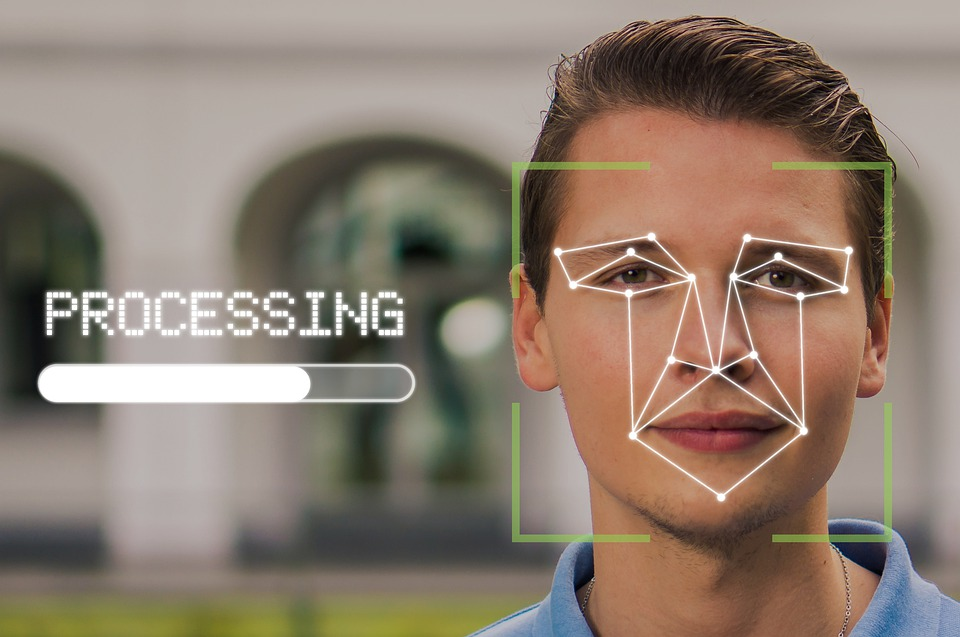

Technology Opportunities
There is a plethora of everyday processes that can be enhanced with artificial intelligence and deep learning.
(Nvidia DLSS (Deep learning super sampling)
“"A special type of AI network, called a convolutional autoencoder, takes the low-resolution current frame, and the high-resolution previous frame, to determine on a pixel-by-pixel basis how to generate a higher quality current frame.
During the training process, the output image is compared to an offline rendered, ultra-high quality 16K reference image, and the difference is communicated back into the network so that it can continue to learn and improve its results. This process is repeated tens of thousands of times on the supercomputer until the network reliably outputs high quality, high resolution images." - Nvidia
Nvidia’s DLSS is an alternative method of rendering gaming graphics by passing each frame through deep learning neural networks. This allows for games to be rendered in lower resolutions (e.g., 720p, 1080 -> 1440p/2160p (4k)), lowering the graphical processing power, and therefore allowing more advanced and taxing rendering techniques (such as ray tracing) to be used. This means that game developers can use these powerful rendering techniques to further the photorealism of game graphics.
Hardware Unboxed. (2020, December 12) - Ingame performance comparison of traditional rendering vs dlss enabled.
With VR gaining popularity, dlss is an enabler for the photorealist virtual reality experience too, as high frames per second (FPS) is required to lower motion blur and may be necessary for some to avoid motion sickness, and high resolutions mean that the experience changes from one where pixels are noticeable to one that let the user become fully immersed.

Facial detection:
One example is with the camera on your phone, which you may have an artificial intelligence features on your camera software, which, using deep learning allows for detection of where your face and eyes are when taking a selfie or a photo with people in it, thus switching the camera focus. Without deep learning this would not be possible. How would software know when your face is in the camera’s field of view? And how else would it know where exactly the face/s are? Facial detection is an effective type of security as it is hard to replicate someone's face. Most common phones and other electronic devices use this form of security and is very effective at keeping the phone secured. Each time the phone is unlocked the phone processes the image and saves it as a model of the face into the system as our appearance change as we get older, in doing this our phone always recognises us and unlocks the phone for us. Another use of facial detection is the system on Snapchat. Snapchat recognises the users face and overlays a filter of their choosing on top of their face. This system is very smart and can pick up faces even in dark conditions. In the future we could have the ability to pay for our things using facial detection making contactless transactions safer and quicker as your face is not something that can get lost or stolen you would not have to worry about unauthorised transactions.
Voice recognition
Deep learning is also used for voice recognition. According to Buyukyilmaz, M., & Cibikdiken, A. O. (2016), a multilayer perceptron (MLP) model achieves a 96.75% accuracy rate in determining whether a voice is male or female. Voice recognition is already being utilised in things such as Siri and Google voice, and could potentially be used for ordering food, so that one could order food by speaking to a robot instead of a human being. Voice recognition could be used by devices to customise the UI to their liking for example a person unlocks their phone with their voice so it loads up that person preferred UI whereas if another person were to unlock that person's phone with their voice, then the phone would load up those other persons preferred UI.
Disease monitoring
Deep learning is used to monitor disease progression and the capability of senior citizens who live alone and care for themselves. They use deep learning algorithms to form a “novel hierarchical and multiphase ADL recognition framework to model ADLs at different granularities.” (MISQ,2021) They compare, evaluate each module and the entire framework against high end benchmarks on two motion sensors datasets which hold ADLs at different granularities. Another place you can see the use of deep learning in healthcare is image processing, specifically on MRI which can predict Alzheimer's and other variations of this disease. Deep learning has also been used to “segment multiple sclerosis lesions in multi-channel 3D MRI and for the differential diagnosis of benign and malignant breast nodule from ultrasound images” (Bioinformatics ,2017). Deep learning is used in high-throughput biology to capture the inside structure of large and high dimensional sets of data. The deep models give the ability of high-level features and is an improvement to traditional models, increasing the interpretability and provides an additional understanding of the structure of the data. Devices equipped with sensors like smartphones and smart watches can monitor most vital medical information and can aid in managing ongoing illnesses, deep learning is a key element required to analyse this new founded type of data.
Autonomous Vehicles
We can see the use of deep learning in autonomous vehicles. Autonomous vehicles use deep learning for Lane detection, Road sign detection/recognition, Traffic light Detection and pedestrian detection. These help the vehicle to be used in auto pilot mode meaning driverless. This in the future can be an alternative for driving and can decrease the chances of crashing by human error. People with disabilities or elderly can use this as means to travel. There are many companies that are creating Autonomous cars and auto pilot. An example could be Tesla, a Tesla has auto pilot meaning it drives itself. Tesla uses all the sensors and makes use of the detection system to effectively drive the vehicle without human dependency. People can use autonomous vehicles to travel great distances without user fatigue and minimal input. The users can make while of their time use it efficiently. People without their licence can also use autonomous vehicles to travel. Public transport can be a hassle and the weather. Users can avoid all these by using an autonomous vehicle. There could be a taxi service for autonomous in the future.
Machinery Fault Detection
Deep learning models have been implemented in machines to detect faults and identify faults. The deep learning automated architecture solves problems through traditional “fault detection and diagnostics systems.” (S. R. Saufi, Z. A. B. Ahmad, M. S. Leong and M. H. Lim,2019) The TFDD system uses manual feature selection which requires the user to have prior knowledge of the data and is time concentrated. The deep learning models used in machine fault detection are Convolutional neural network, stacked autoencoder, restricted Boltzmann machine, deep belief network and deep neural network. The use of the fault detection and diagnostics is important and crucial for the system to run efficiently with minimal unexpected breakdowns and to ensure the efficiency of production.
Further discussion and what the future holds.
The technology is still in a growing and new stage, so the opportunities are limitless. Imagine applying deep learning into a device that is trained with a neural network that could detect the health of every cell in your body, alerting you if you had any diseases or illnesses, and furthermore, a neural network that is trained to find the solution for any disease or illness.
In the GPU duopoly, the other company, AMD, has recently announced their own open-source AI upscaling technique called ‘FidelityFX super resolution’, which is even used in the latest consoles (PS5 and Xbox series), which may lead to increased attention towards artificial intelligence in machine learning and deep learning, specifically with graphics cards and the software and hardware environment. This is important, as the most people don’t know and look further than ‘AI’ and what makes up artificial intelligence itself.
by Muni Jashneel Mudaliar, Glenn Neil, Timothy Young.